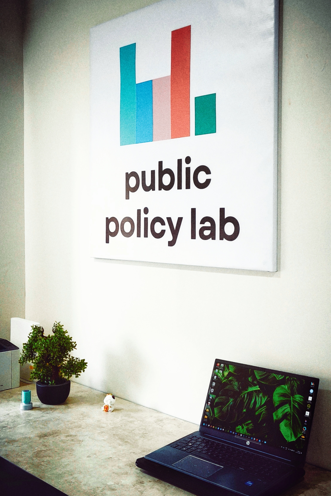

Public Policy Lab is a non-partisan think tank and consultancy firm based in the Maldives. We work to develop the policy environment in the Maldives and across Asia through original research, targeted projects, policy tools, publications, targeted advocacy and messaging, courses and seminars in partnership with other institutions, and training the next generation of policymakers.
We bring our expertise, relationships, experience, and passion for policy to our consulting work. As consultants, we specialise in providing deeply researched insights and analysis, polished publications and reports, and guided expertise for clients. Whether you’re a government agency, local or city council, NGO, private company, advocacy group, educational institution, international business, or anyone in need of policy expertise, you can find that with us.
Our work will always include not-for-profit policy development activities: whether pro bono policy and technical advisory roles, education, research and publications, or data tools for academics and journalists.
At Public Policy Lab, we operate with complete conviction and belief that a better world is possible. We’re not embarrassed about being idealistic or caring too much. If you’re on board and would like to work with us, reach out here.
See our work ↓
Policy briefs, analytical essays, data visualizations, interactive tools, and open resources. All work is free to use.
Beyond publications, we build interactive data products and applications. Some are live, some are demos of tools we deploy for organizations.
Upload diagnostic scan files – chest X-rays, CT/MRI outputs, mammograms, retinal images – and have peer-reviewed machine learning models screen for dozens of conditions. Free and private.
AIMED →Demographics, infrastructure, transport, elections, and development projects. Currently covering 21 islands across AA, F, and M atolls with Australian government funding. Every island in the Maldives to be integrated as additional funding is secured.
Open explorer →The first open collection of nutrition profiles for Maldivian food. Starting with shorteats, expanding to full meals.
Open NutritionMV →Screenshottable charts built from census and survey data. For students, researchers, and academics to use freely.
Open gallery →Six digital tools built on foresight methodologies for team planning on screens. Teams save outputs and generate detailed reports at the end of planning sessions. Available for workshops or organisational licensing.
Learn more →Interactive timeline of Maldivian social legislation from independence to present. Searchable, filterable, and designed for researchers and practitioners.
Open timeline →Community events, a bookable venue for artists and the public, free CV and application support, internships for young professionals, chapbook publishing for local writers, open data tools, and training courses.
See community work →Through our consulting work, we have worked with government agencies, international development organisations, NGOs, independent bodies, private sector companies, tourism establishments, law firms, international firms seeking to invest in or bid for projects in the Maldives, political candidates, and organisations internationally with strong ties in Indonesia and Malaysia. Some organisations we’ve worked with include: